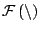

Next: Data Nodes Up: Composing with DSPOOM Objects: Previous: Processing Composites
A DSPOOM Network is a set of interconnected Processing objects that collaborate for a common goal and can be modified on run-time. As illustrated in figure 4.8, it can be seen as a set of Processing objects with connected input and output ports and input and output controls.
Nevertheless, if we take a closer look the network entity is made up of the following elements 4.4:
In order to define this process graph, the network must keep track of the list of connected pairs of input and output Ports. An output Port may have any number of input Ports connected to it while an input port can only be connected to a single output Port.
All interconnected Ports should be strongly typed and expect the same Processing Data type. But the amount of data tokens needed by every Port is not predetermined, does not have to be the same for all ports and does not even need to be fixed on run-time. The amount of data tokens that a given Port needs to consume or produce in every execution is determined by its associated region or window size. In principle, and in a generic application, there is no forced relation between the region sizes of connected ports. That is, an Outport many have a very small region while the connected Inports have larger reading regions. In this case the producing Processing object will have to be triggered several times before the reading Processing objects can proceed with an execution.
Apart from the main process graph defined by interconnected Ports, a Network has a secondary graph defined by Controls and their connections. As already commented in previous sections, while data flow is handled in a synchronous manner, the control mechanism is event-driven. A control event is transmitted from the output control to the connected input controls as soon as it generates. The new control value overwrites the previously existing one, even if it has still not been read.
But while the Control mechanism is very simple and does not need any supervision, the data flow does need of some sort of external control. The Network itself is in charge of managing writing and reading of data. For doing so the Network must respond to a flow control policy that has been pre-determined and fire the execution of the Processing objects accordingly and by calling their Do operation.
If, for instance, a static schedule is decided, window sizes for all ports must remain fixed during execution. Then the network will determine a static schedule complete cycle consisting of firings for each nth Processing object. The execution of a network will stop whenever a stop control is received at the network level (this control may be generated, for instance, by the user or by the absence of data at the network input).
Different dynamic flow control policies can be used depending on the particular problem or system under study. Using a pull or lazy policy the execution thread starts by the outermost Processing object in the Network (the one whose output Port corresponds to the output of the Network). If this Processing object checks that it does not have enough input data it hands the control to the Processing object whose output Port is connected to its inputs and so on. In the push or eager version, the process starts with the Processing object that acts as the input to the chain and generating data until all Processing objects connected to its output Port can process. Then it hands control to them and they repeat the process.
A Network has compositional properties so it can be made of interconnected Networks that in turn have other internal Networks, etc. Therefore, when looking at a Network from the distance, it behaves also like a Processing object and has input and output data as well as controls.
A Network is very much related to Processing Composites. The main difference is that Processing Composites are decided at compile time. Defining a new Processing Composite requires programming a new class and combining existing Processing classes or Processing Composite classes. A Processing Composite is seen at run-time as a regular Processing object and therefore must have all flow control behavior coded into the class. This behavior cannot be parameterized or changed and is usually very much case-dependant. A Processing Composite is less flexible than a corresponding Network but can be more efficient as it is designed knowing the particular characteristics of the components and the overall process being implemented.
On the other hand, a Network is much more flexible, can be decided at run-time without any programming. A Network is more flexible but can sometimes result less efficient than a tuned processing composite. In general terms, we will prefer a Network to a processing composite and will only use Processing Composite after having used the corresponding Network and having decided on optimization that would be necessary in order to yield a more efficient result.
As a Network can be seen as a Processing object when looked from a distance, it can also be classified into the same categories than a Processing object. A Network is a generating Network if it has no inputs and a Network is a sink Network if it has no outputs.